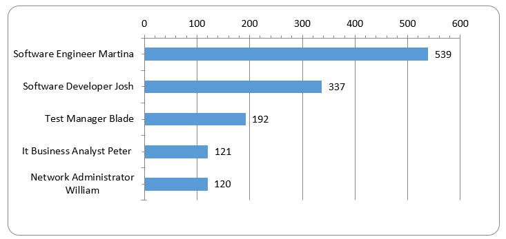
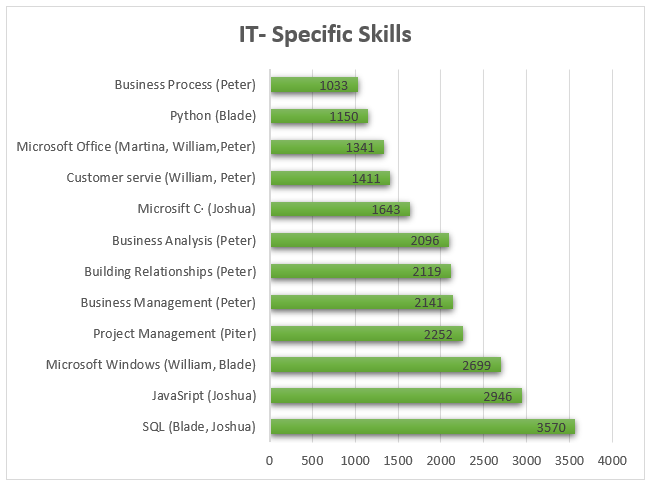
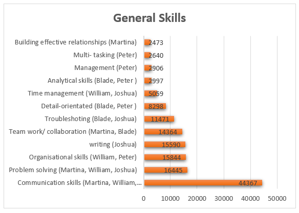

Having looked at the Burning Glass data, has your opinion of your ideal job changed? Why or why not?
From my perspective it seems that the results show quite a few skills sets that are in demand as well as my
ideal role in software engineering. I can't really say that my opinion has changed much due to fact that the job
I'm aiming for and skills required look popular. To me it still feels as though there are vast number of
opportunities in this position. If the results were on the other end of the scale, I would still say I would be
motivated enough to pursue it as its overall aspects are something that interest me.

Graphic 1. IT Job Titles in demand from employers

Graphic 2. IT Specific skills in demand from employers.

Graphic 3. IT General skills in demand from employers.
Table 1. IT Specific skills that is not in group's required skill set.
Programs
Data
JAVA
2860
SAP
2189
Graphic Design
2068
Table 2. IT General skills that is not in group's required skill set.